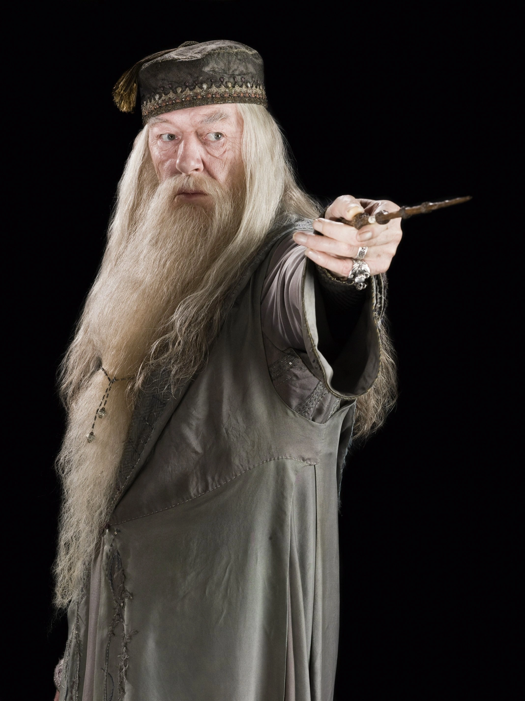

Harry Potter
Harry Potter es el símbolo de la valentía en lo
inesperado.
Huérfano, criado en circunstancias difíciles y lanzado al mundo
mágico, aprendió que el verdadero poder reside en el sacrificio,
la amistad y la integridad.
En mi trabajo como desarrollador, Harry me inspira a
adentrarme en lo nuevo, a equivocarme y levantarme, y a creer
que incluso los principiantes pueden hacer magia cuando
perseveran.
«No sirve de nada preocuparse. Lo que venga, vendrá, y le
plantaremos cara.»
Ronald Weasley
Ron Weasley es la lealtad y la amistad
personificadas.
Siempre a la sombra de otros, sin embargo demostró que el
apoyo verdadero y la confianza en ti mismo pueden
marcar la diferencia.
En mi vida profesional, Ron representa la importancia de
trabajar en equipo, compartir conocimientos, celebrarlo todo y
saber que no estás solo en el camino del desarrollo web.
«¿Te has vuelto loca? ¿Eres una bruja o no?»
Hermione Granger
Hermione Granger es el epítome de la
inteligencia, la curiosidad y la disciplina.
Su sed de conocimiento y
su enfoque metódico la convirtieron en pilar del
trío mágico. Nos enseña el
valor de la investigación, la preparación y la
dedicación.
En mi experiencia como desarrollador, Hermione encarna la
importancia de
leer la documentación, depurar el código con paciencia y nunca
dejar de aprender en un mundo tecnológico que evoluciona
constantemente.
«En caso de duda, ve a la biblioteca.»

Albus Dumbledore
Albus Dumbledore es sabiduría, visión y guía.
Líder de inteligencia y moralidad, encontró luz en la oscuridad y
ayudó a otros a encontrar su camino.
En mi desarrollo profesional, Dumbledore representa el mentor
interno:
ver más allá del presente, cultivar ética, tomar decisiones con
visión y liderar sin necesidad de aplausos.
«Son nuestras elecciones, Harry, las que muestran lo que
realmente somos, mucho más que nuestras habilidades.»

Severus Snape
«ALWAYS...»
Severus Snape es complejidad, secreto y
redención.
Su historia demuestra que los errores pasados
no definen tu valor final, y que la lealtad puede
ocultarse tras la apariencia.
Para mí como desarrollador, Snape simboliza
la paciencia, el perfeccionismo, la dualidad entre lo visible y
lo que sucede detrás del código, y la importancia de mantenerse
fiel a tus principios incluso cuando nadie lo ve.
«Puedo enseñarte a embotellar la fama, elaborar la gloria, e
incluso poner un tapón a la muerte.»

Tom Marvolo Riddle
Tom Riddle (que se convierte en Lord Voldemort)
representa el peligro del talento sin ética, de la ambición sin
límites y del miedo como motor.
Es un recordatorio de que el poder
sin propósito conduce al vacío.
En el ámbito del desarrollo web, me enseña que
ser bueno técnicamente no basta: el código debe tener
intención, responsabilidad y humanidad.
«La grandeza inspira envidia, la envidia engendra rencor, y el
rencor genera mentiras.»